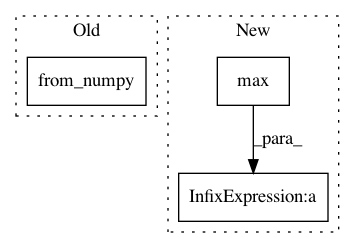

aa85b32ba95645f73f6fec077589c0579e4eb1b1,torch_geometric/nn/models/schnet.py,SchNet,from_qm9_pretrained,#Any#Any#Any#,85
Before Change
idx = dataset.data.idx
train_idx = torch.from_numpy(train_idx[np.isin(train_idx, idx)])
val_idx = torch.from_numpy(val_idx[np.isin(val_idx, idx)])
test_idx = torch.from_numpy(test_idx[np.isin(test_idx, idx)])
path = osp.join(root, "trained_schnet_models", name, "best_model")
state = torch.load(path, map_location="cpu")
After Change
// Filter the splits to only contain characterized molecules.
idx = dataset.data.idx
assoc = idx.new_empty(idx.max().item() + 1)
assoc[idx] = torch.arange(idx.size(0))
train_idx = assoc[train_idx[np.isin(train_idx, idx)]]
In pattern: SUPERPATTERN
Frequency: 3
Non-data size: 3
Instances
Project Name: rusty1s/pytorch_geometric
Commit Name: aa85b32ba95645f73f6fec077589c0579e4eb1b1
Time: 2020-05-13
Author: matthias.fey@tu-dortmund.de
File Name: torch_geometric/nn/models/schnet.py
Class Name: SchNet
Method Name: from_qm9_pretrained
Project Name: rusty1s/pytorch_geometric
Commit Name: bffaf5e2e89dba4b12e9eaebb92dcd018dcf91a9
Time: 2020-05-31
Author: matthias.fey@tu-dortmund.de
File Name: torch_geometric/nn/models/schnet.py
Class Name: SchNet
Method Name: from_qm9_pretrained
Project Name: rusty1s/pytorch_geometric
Commit Name: 5ffa38fca42bb3fbee030f4b80264e0f4910a49c
Time: 2018-01-16
Author: matthias.fey@tu-dortmund.de
File Name: torch_geometric/datasets/utils/tu_format.py
Class Name:
Method Name: read_adj